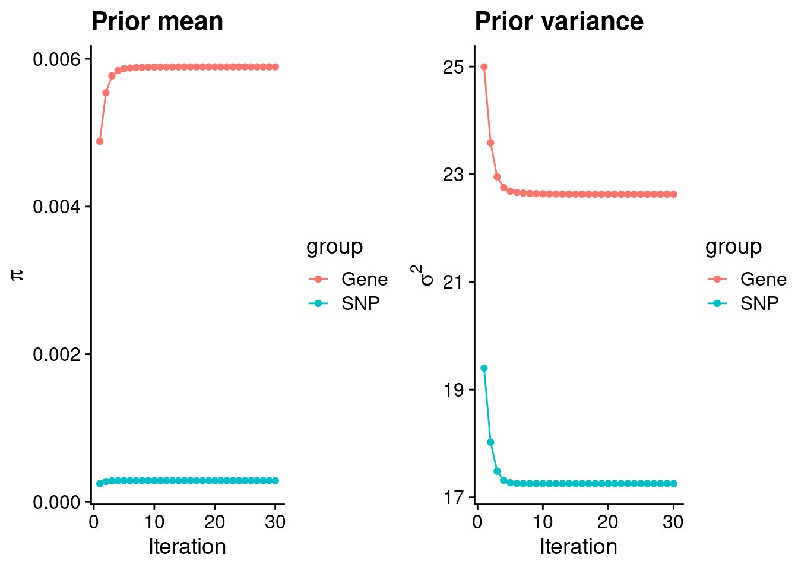
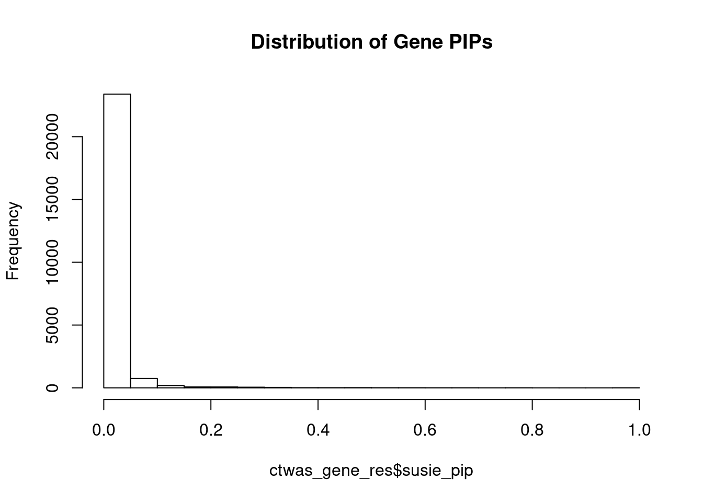
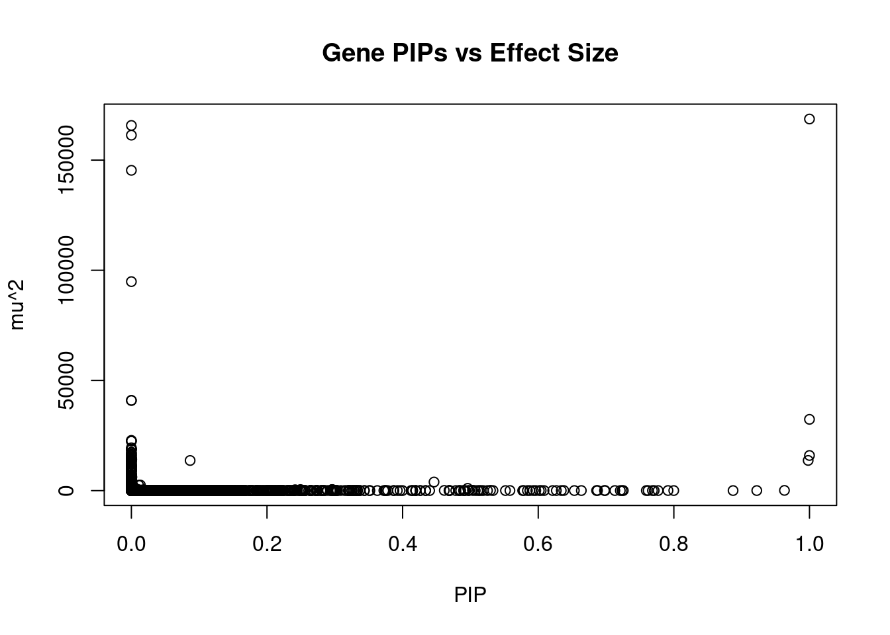
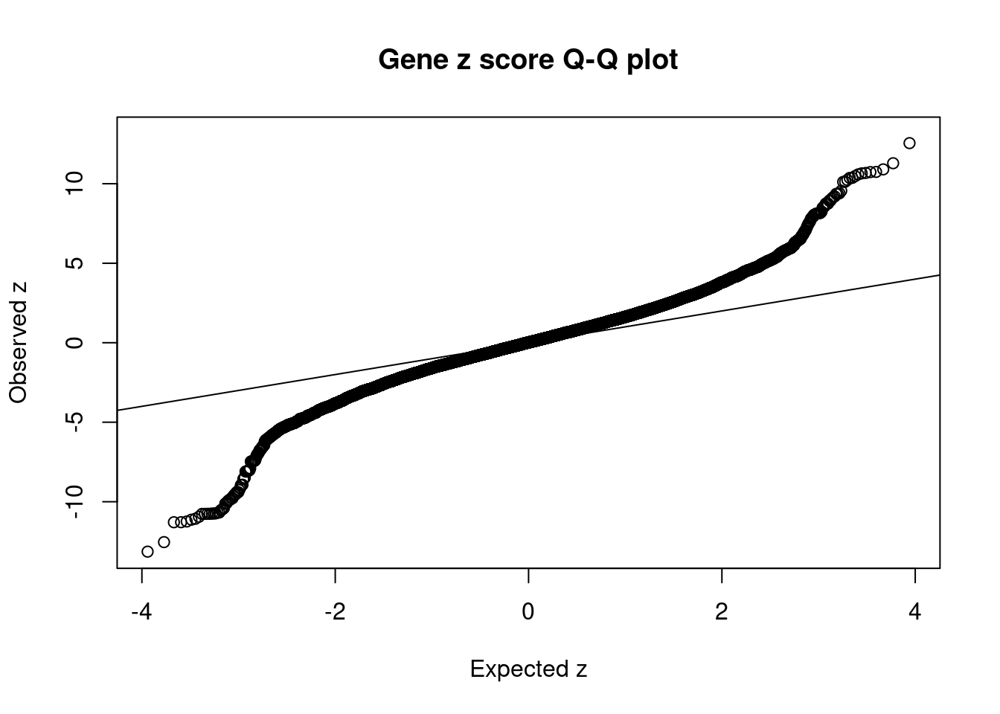
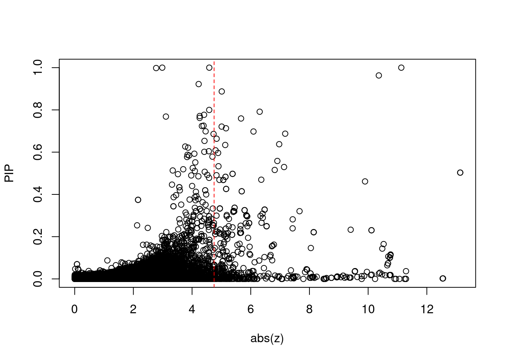
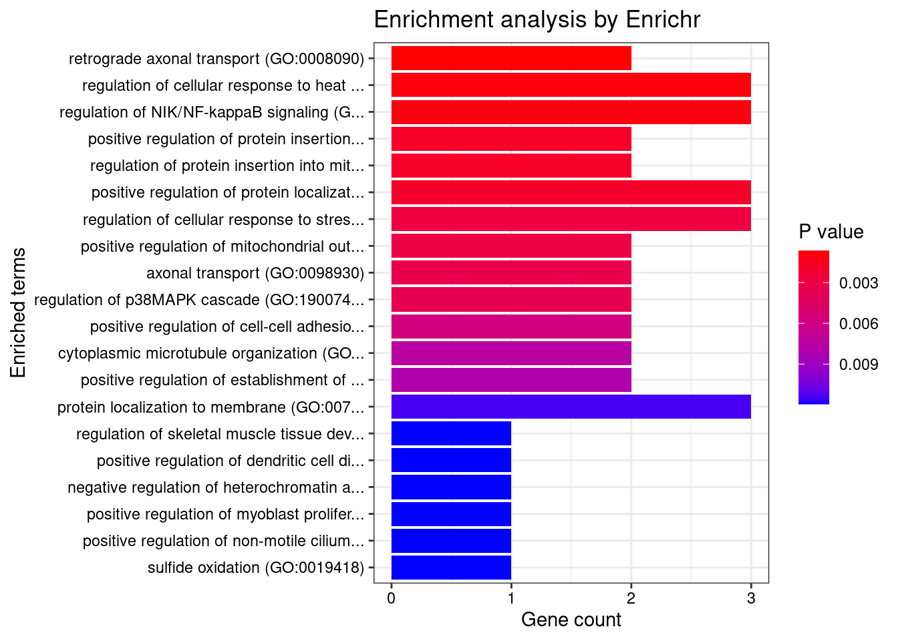
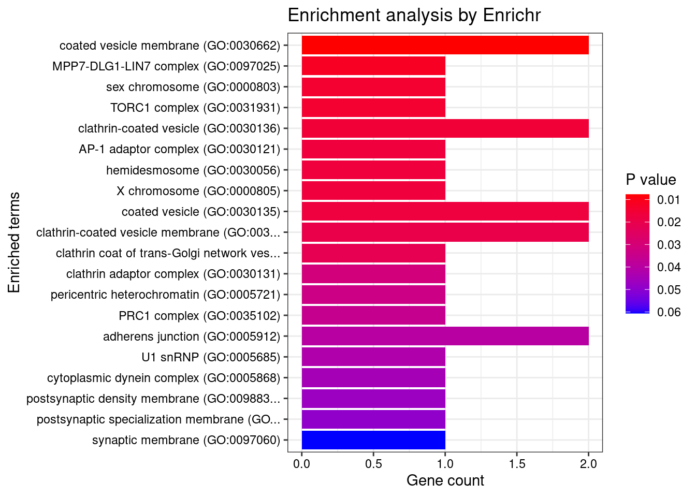
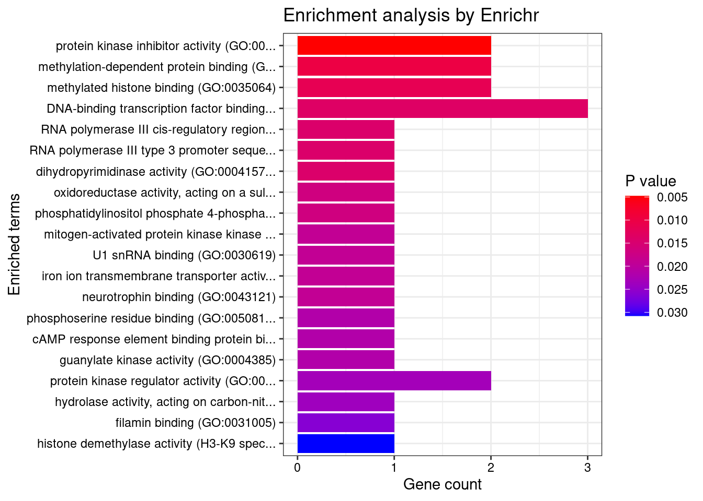
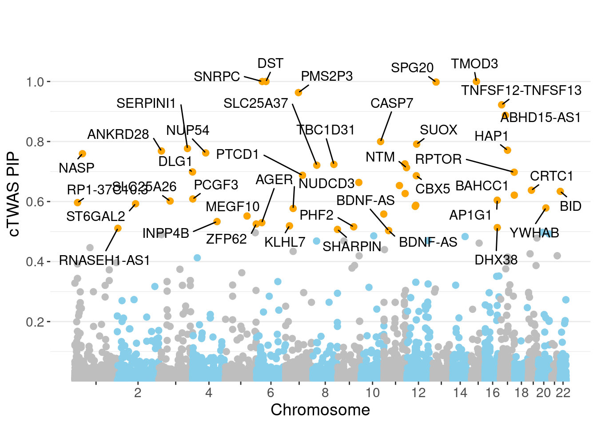
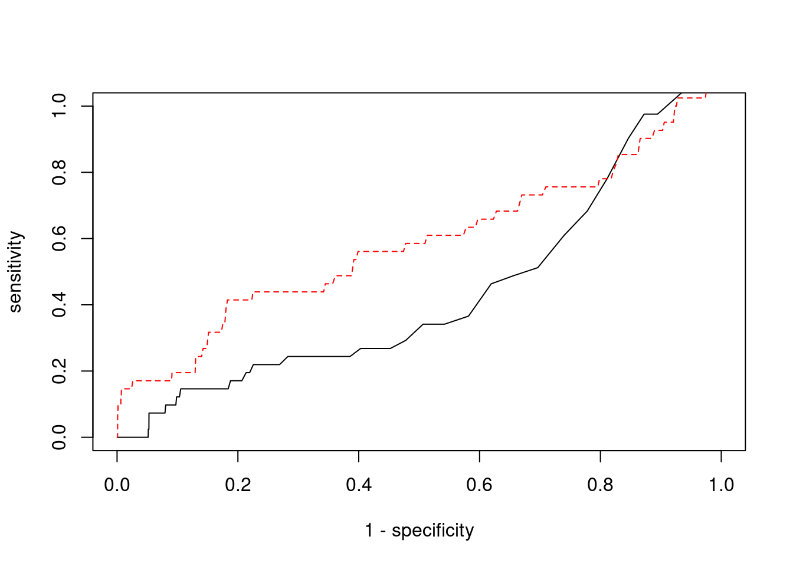

Last updated: 2022-02-22
Checks: 6 1
Knit directory: cTWAS_analysis/
This reproducible R Markdown analysis was created with workflowr (version 1.6.2). The Checks tab describes the reproducibility checks that were applied when the results were created. The Past versions tab lists the development history.
Great! Since the R Markdown file has been committed to the Git repository, you know the exact version of the code that produced these results.
Great job! The global environment was empty. Objects defined in the global environment can affect the analysis in your R Markdown file in unknown ways. For reproduciblity it’s best to always run the code in an empty environment.
The command set.seed(20211220) was run prior to running the code in the R Markdown file. Setting a seed ensures that any results that rely on randomness, e.g. subsampling or permutations, are reproducible.
Great job! Recording the operating system, R version, and package versions is critical for reproducibility.
Nice! There were no cached chunks for this analysis, so you can be confident that you successfully produced the results during this run.
Using absolute paths to the files within your workflowr project makes it difficult for you and others to run your code on a different machine. Change the absolute path(s) below to the suggested relative path(s) to make your code more reproducible.
| absolute | relative |
|---|---|
| /project2/xinhe/shengqian/cTWAS/cTWAS_analysis/data/ | data |
| /project2/xinhe/shengqian/cTWAS/cTWAS_analysis/code/ctwas_config.R | code/ctwas_config.R |
Great! You are using Git for version control. Tracking code development and connecting the code version to the results is critical for reproducibility.
The results in this page were generated with repository version 1058990. See the Past versions tab to see a history of the changes made to the R Markdown and HTML files.
Note that you need to be careful to ensure that all relevant files for the analysis have been committed to Git prior to generating the results (you can use wflow_publish or wflow_git_commit). workflowr only checks the R Markdown file, but you know if there are other scripts or data files that it depends on. Below is the status of the Git repository when the results were generated:
Ignored files:
Ignored: .ipynb_checkpoints/
Untracked files:
Untracked: Rplot.png
Untracked: analysis/.ipynb_checkpoints/
Untracked: analysis/Glucose_Adipose_Subcutaneous.Rmd
Untracked: analysis/Glucose_Adipose_Visceral_Omentum.Rmd
Untracked: analysis/Splicing_Test.Rmd
Untracked: code/.ipynb_checkpoints/
Untracked: code/AF_out/
Untracked: code/BMI_S_out/
Untracked: code/BMI_out/
Untracked: code/Glucose_out/
Untracked: code/LDL_S_out/
Untracked: code/T2D_out/
Untracked: code/ctwas_config.R
Untracked: code/mapping.R
Untracked: code/out/
Untracked: code/run_AF_analysis.sbatch
Untracked: code/run_AF_analysis.sh
Untracked: code/run_AF_ctwas_rss_LDR.R
Untracked: code/run_BMI_analysis.sbatch
Untracked: code/run_BMI_analysis.sh
Untracked: code/run_BMI_analysis_S.sbatch
Untracked: code/run_BMI_analysis_S.sh
Untracked: code/run_BMI_ctwas_rss_LDR.R
Untracked: code/run_BMI_ctwas_rss_LDR_S.R
Untracked: code/run_Glucose_analysis.sbatch
Untracked: code/run_Glucose_analysis.sh
Untracked: code/run_Glucose_ctwas_rss_LDR.R
Untracked: code/run_LDL_analysis_S.sbatch
Untracked: code/run_LDL_analysis_S.sh
Untracked: code/run_LDL_ctwas_rss_LDR_S.R
Untracked: code/run_T2D_analysis.sbatch
Untracked: code/run_T2D_analysis.sh
Untracked: code/run_T2D_ctwas_rss_LDR.R
Untracked: data/.ipynb_checkpoints/
Untracked: data/AF/
Untracked: data/BMI/
Untracked: data/BMI_S/
Untracked: data/Glucose/
Untracked: data/LDL_S/
Untracked: data/T2D/
Untracked: data/TEST/
Untracked: data/UKBB/
Untracked: data/UKBB_SNPs_Info.text
Untracked: data/gene_OMIM.txt
Untracked: data/gene_pip_0.8.txt
Untracked: data/mashr_Heart_Atrial_Appendage.db
Untracked: data/mashr_sqtl/
Untracked: data/summary_known_genes_annotations.xlsx
Untracked: data/untitled.txt
Unstaged changes:
Modified: analysis/BMI_Brain_Cortex.Rmd
Modified: analysis/LDL_Liver_S.Rmd
Modified: analysis/index.Rmd
Note that any generated files, e.g. HTML, png, CSS, etc., are not included in this status report because it is ok for generated content to have uncommitted changes.
These are the previous versions of the repository in which changes were made to the R Markdown (analysis/BMI_Brain_Frontal_Cortex_BA9_S.Rmd) and HTML (docs/BMI_Brain_Frontal_Cortex_BA9_S.html) files. If you’ve configured a remote Git repository (see ?wflow_git_remote), click on the hyperlinks in the table below to view the files as they were in that past version.
| File | Version | Author | Date | Message |
|---|---|---|---|---|
| Rmd | 1058990 | sq-96 | 2022-02-22 | update |
#number of imputed weights
nrow(qclist_all)[1] 24641#number of imputed weights by chromosome
table(qclist_all$chr)
1 2 3 4 5 6 7 8 9 10 11 12 13 14 15 16
2306 1701 1466 960 990 1287 1387 902 976 1088 1462 1224 467 823 804 1157
17 18 19 20 21 22
1686 336 1754 789 317 759 #number of imputed weights without missing variants
sum(qclist_all$nmiss==0)[1] 22590#proportion of imputed weights without missing variants
mean(qclist_all$nmiss==0)[1] 0.9168#add z scores to results
load(paste0(results_dir, "/", analysis_id, "_expr_z_gene.Rd"))
ctwas_gene_res$z <- z_gene[ctwas_gene_res$intron_id,]$z
z_snp <- z_snp[z_snp$id %in% ctwas_snp_res$id,]
ctwas_snp_res$z <- z_snp$z[match(ctwas_snp_res$id, z_snp$id)]
#merge gene and snp results with added information
ctwas_snp_res$genename=NA
ctwas_snp_res$gene_type=NA
ctwas_snp_res$intron_id=NA
ctwas_res <- rbind(ctwas_gene_res,
ctwas_snp_res[,colnames(ctwas_gene_res)])
#get number of eQTL for geens
num_eqtl <- c()
for (i in 1:22){
load(paste0(results_dir, "/", analysis_id, "_expr_chr", i, ".exprqc.Rd"))
num_eqtl <- c(num_eqtl, unlist(lapply(wgtlist, nrow)))
}
ctwas_gene_res$num_eqtl <- num_eqtl[ctwas_gene_res$intron_id]
#store columns to report
report_cols <- colnames(ctwas_gene_res)[!(colnames(ctwas_gene_res) %in% c("type", "region_tag1", "region_tag2", "cs_index", "gene_type", "z_flag", "id", "chrom", "pos"))]
first_cols <- c("genename", "region_tag")
report_cols <- c(first_cols, report_cols[!(report_cols %in% first_cols)])
report_cols_snps <- c("id", report_cols[-1])
report_cols_snps <- report_cols_snps[!(report_cols_snps %in% "num_eqtl")]
#get number of SNPs from s1 results; adjust for thin argument
ctwas_res_s1 <- data.table::fread(paste0(results_dir, "/", analysis_id, "_ctwas.s1.susieIrss.txt"))
n_snps <- sum(ctwas_res_s1$type=="SNP")/thin
rm(ctwas_res_s1)
#estimated group prior
estimated_group_prior <- group_prior_rec[,ncol(group_prior_rec)]
names(estimated_group_prior) <- c("gene", "snp")
estimated_group_prior["snp"] <- estimated_group_prior["snp"]*thin #adjust parameter to account for thin argument
print(estimated_group_prior) gene snp
0.0058908 0.0002873 #estimated group prior variance
estimated_group_prior_var <- group_prior_var_rec[,ncol(group_prior_var_rec)]
names(estimated_group_prior_var) <- c("gene", "snp")
print(estimated_group_prior_var) gene snp
22.63 17.26 #report sample size
print(sample_size)[1] 336107#report group size
group_size <- c(nrow(ctwas_gene_res), n_snps)
print(group_size)[1] 24641 7535010#estimated group PVE
estimated_group_pve <- estimated_group_prior_var*estimated_group_prior*group_size/sample_size #check PVE calculation
names(estimated_group_pve) <- c("gene", "snp")
print(estimated_group_pve) gene snp
0.009774 0.111145 #compare sum(PIP*mu2/sample_size) with above PVE calculation
c(sum(ctwas_gene_res$PVE),sum(ctwas_snp_res$PVE))[1] 0.7233 15.6767
genename region_tag susie_pip mu2 PVE
24162 SNRPC 6_28 1.0000 168656.56 5.018e-01
24181 DST 6_42 1.0000 15946.52 4.744e-02
24352 TMOD3 15_21 1.0000 32340.14 9.622e-02
24342 SPG20 13_13 0.9981 13694.80 4.067e-02
24210 PMS2P3 7_48 0.9631 96.89 2.776e-04
24446 TNFSF12-TNFSF13 17_7 0.9223 28.82 7.909e-05
24518 ABHD15-AS1 17_18 0.8873 25.75 6.797e-05
24305 CASP7 10_71 0.7999 25.25 6.008e-05
14712 SUOX 12_35 0.7914 42.80 1.008e-04
5208 SERPINI1 3_103 0.7768 23.79 5.498e-05
19212 HAP1 17_24 0.7710 23.31 5.347e-05
4160 ANKRD28 3_11 0.7684 22.34 5.107e-05
5856 NUP54 4_51 0.7620 30.54 6.925e-05
860 NASP 1_28 0.7594 29.08 6.569e-05
14094 RP11-166D19.1 11_74 0.7255 25.74 5.556e-05
10498 TBC1D31 8_80 0.7237 25.51 5.492e-05
10060 SLC25A37 8_24 0.7210 26.57 5.701e-05
24317 NTM 11_82 0.7130 29.31 6.219e-05
5405 DLG1 3_121 0.6985 23.76 4.938e-05
19965 RPTOR 17_45 0.6977 47.53 9.867e-05
intron_id z num_eqtl
24162 intron_6_34757954_34762595 -11.130 1
24181 intron_6_56468999_56469883 2.984 1
24352 intron_15_51924578_51931031 -4.586 1
24342 intron_13_36312477_36313968 2.776 1
24210 intron_7_75514779_75515718 10.364 2
24446 intron_17_7559702_7560049 -4.225 1
24518 intron_17_29583616_29589327 5.011 1
24305 intron_10_113679349_113697494 -4.584 1
14712 intron_12_56002720_56003618 6.304 2
5208 intron_3_167735823_167789111 -4.409 2
19212 intron_17_41727144_41727762 4.260 1
4160 intron_3_15677627_15678209 3.108 1
5856 intron_4_76132719_76134175 4.259 1
860 intron_1_45600457_45602255 5.669 2
14094 intron_11_122066434_122100374 4.392 1
10498 intron_8_123130333_123140761 -4.335 1
10060 intron_8_23529212_23566108 5.008 1
24317 intron_11_131582378_131660929 -5.156 1
5405 intron_3_197149796_197183575 4.462 1
19965 intron_17_80730706_80754010 -6.093 1
genename region_tag susie_pip mu2 PVE
24162 SNRPC 6_28 1 168657 0.50179
24160 C6orf106 6_28 0 165735 0.00000
24158 C6orf106 6_28 0 161319 0.00000
24161 C6orf106 6_28 0 145360 0.00000
24159 C6orf106 6_28 0 94855 0.00000
21171 MAST3 19_14 0 40933 0.00000
21172 MAST3 19_14 0 40933 0.00000
24352 TMOD3 15_21 1 32340 0.09622
13636 MRPL21 11_38 0 22792 0.00000
16920 CATSPER2P1 15_16 0 22484 0.00000
13639 IGHMBP2 11_38 0 22449 0.00000
24037 R3HDM1 2_80 0 19408 0.00000
4531 HEMK1 3_35 0 18766 0.00000
4529 HEMK1 3_35 0 18764 0.00000
4530 HEMK1 3_35 0 18764 0.00000
4528 C3orf18 3_35 0 18761 0.00000
24350 LYSMD2 15_21 0 17457 0.00000
13637 MRPL21 11_38 0 17044 0.00000
16911 ZSCAN29 15_16 0 16514 0.00000
24165 UHRF1BP1 6_28 0 16130 0.00000
intron_id z num_eqtl
24162 intron_6_34757954_34762595 -11.130 1
24160 intron_6_34654779_34696446 -11.244 1
24158 intron_6_34595948_34606555 -11.070 1
24161 intron_6_34688933_34696446 10.901 1
24159 intron_6_34654779_34688841 10.237 1
21171 intron_19_18147017_18147443 -6.726 1
21172 intron_19_18147044_18147443 6.726 1
24352 intron_15_51924578_51931031 -4.586 1
13636 intron_11_68898012_68900535 4.277 2
16920 intron_15_43744219_43744395 -4.508 1
13639 intron_11_68930434_68933299 -4.493 1
24037 intron_2_135680324_135709433 -4.474 1
4531 intron_3_50577573_50577826 4.701 1
4529 intron_3_50571801_50577052 4.704 1
4530 intron_3_50572208_50577052 -4.704 1
4528 intron_3_50569574_50570931 4.682 1
24350 intron_15_51725121_51737350 2.735 1
13637 intron_11_68898012_68900548 -3.952 2
16911 intron_15_43366808_43368923 -3.463 2
24165 intron_6_34878720_34880289 2.866 2 genename region_tag susie_pip mu2 PVE
24162 SNRPC 6_28 1.00000 168656.56 5.018e-01
24352 TMOD3 15_21 1.00000 32340.14 9.622e-02
24181 DST 6_42 1.00000 15946.52 4.744e-02
24342 SPG20 13_13 0.99808 13694.80 4.067e-02
1186 LRRC8B 1_54 0.44632 3899.42 5.178e-03
24343 SPG20 13_13 0.08663 13667.97 3.523e-03
7133 SFXN1 5_105 0.49597 1022.46 1.509e-03
17910 TNRC6A 16_21 0.29611 476.48 4.198e-04
17909 TNRC6A 16_21 0.29611 476.48 4.198e-04
17907 TNRC6A 16_21 0.24934 479.29 3.556e-04
12293 TNKS2 10_59 0.24145 396.15 2.846e-04
24210 PMS2P3 7_48 0.96310 96.89 2.776e-04
7689 AGER 6_26 0.52957 133.55 2.104e-04
13104 BDNF-AS 11_19 0.50321 119.40 1.788e-04
13105 BDNF-AS 11_19 0.50321 119.40 1.788e-04
17108 MAP2K5 15_31 0.46146 91.69 1.259e-04
9415 PTCD1 7_61 0.68741 54.88 1.122e-04
14712 SUOX 12_35 0.79138 42.80 1.008e-04
3042 FAM178B 2_57 0.01328 2506.91 9.905e-05
19965 RPTOR 17_45 0.69772 47.53 9.867e-05
intron_id z num_eqtl
24162 intron_6_34757954_34762595 -11.130 1
24352 intron_15_51924578_51931031 -4.586 1
24181 intron_6_56468999_56469883 2.984 1
24342 intron_13_36312477_36313968 2.776 1
1186 intron_1_89584789_89592771 3.316 1
24343 intron_13_36335832_36346225 -2.819 1
7133 intron_5_175516663_175521919 3.518 1
17910 intron_16_24805151_24805674 5.878 1
17909 intron_16_24805151_24805605 -5.878 1
17907 intron_16_24730300_24750726 5.887 1
12293 intron_10_91817229_91819270 2.490 2
24210 intron_7_75514779_75515718 10.364 2
7689 intron_6_32181477_32181606 -7.135 1
13104 intron_11_27640005_27659171 13.138 1
13105 intron_11_27658462_27659171 -13.138 1
17108 intron_15_67727945_67748231 -9.894 1
9415 intron_7_99429806_99433278 7.174 1
14712 intron_12_56002720_56003618 6.304 2
3042 intron_2_96902707_96908602 2.963 1
19965 intron_17_80730706_80754010 -6.093 1 genename region_tag susie_pip mu2 PVE
13104 BDNF-AS 11_19 5.032e-01 119.40 1.788e-04
13105 BDNF-AS 11_19 5.032e-01 119.40 1.788e-04
4501 RBM6 3_35 2.337e-03 899.23 6.253e-06
4502 RBM6 3_35 2.006e-03 898.83 5.364e-06
18006 KCTD13 16_24 3.662e-02 106.65 1.162e-05
2443 DNAJC27-AS1 2_15 5.405e-05 190.44 3.062e-08
2444 DNAJC27-AS1 2_15 5.405e-05 190.44 3.062e-08
24160 C6orf106 6_28 0.000e+00 165734.71 0.000e+00
24162 SNRPC 6_28 1.000e+00 168656.56 5.018e-01
24158 C6orf106 6_28 0.000e+00 161319.07 0.000e+00
4493 RNF123 3_35 1.629e-11 813.49 3.942e-14
24161 C6orf106 6_28 0.000e+00 145360.10 0.000e+00
17985 SH2B1 16_23 1.155e-01 63.35 2.177e-05
18020 DOC2A 16_24 1.856e-02 93.44 5.159e-06
17987 SH2B1 16_23 1.120e-01 63.22 2.107e-05
17988 SH2B1 16_23 1.120e-01 63.22 2.107e-05
17983 ATXN2L 16_23 1.018e-01 62.83 1.903e-05
18007 TMEM219 16_24 1.795e-02 92.79 4.955e-06
17982 ATXN2L 16_23 9.991e-02 62.74 1.865e-05
18011 TAOK2 16_24 1.792e-02 92.67 4.942e-06
intron_id z num_eqtl
13104 intron_11_27640005_27659171 13.14 1
13105 intron_11_27658462_27659171 -13.14 1
4501 intron_3_49962685_49967470 12.55 1
4502 intron_3_49999513_50048245 -12.54 1
18006 intron_16_29923359_29925790 -11.29 2
2443 intron_2_24972232_24972626 -11.29 1
2444 intron_2_24972232_25001415 11.29 1
24160 intron_6_34654779_34696446 -11.24 1
24162 intron_6_34757954_34762595 -11.13 1
24158 intron_6_34595948_34606555 -11.07 1
4493 intron_3_49714174_49715575 -10.95 1
24161 intron_6_34688933_34696446 10.90 1
17985 intron_16_28863754_28866012 -10.76 1
18020 intron_16_30007090_30007173 -10.76 1
17987 intron_16_28865624_28866012 -10.76 1
17988 intron_16_28869383_28870709 -10.76 1
17983 intron_16_28835399_28835549 -10.74 1
18007 intron_16_29971578_29972042 -10.74 1
17982 intron_16_28835399_28835546 10.74 1
18011 intron_16_29989805_29990543 10.73 1
[1] 0.01899 genename region_tag susie_pip mu2 PVE
13104 BDNF-AS 11_19 5.032e-01 119.40 1.788e-04
13105 BDNF-AS 11_19 5.032e-01 119.40 1.788e-04
4501 RBM6 3_35 2.337e-03 899.23 6.253e-06
4502 RBM6 3_35 2.006e-03 898.83 5.364e-06
18006 KCTD13 16_24 3.662e-02 106.65 1.162e-05
2443 DNAJC27-AS1 2_15 5.405e-05 190.44 3.062e-08
2444 DNAJC27-AS1 2_15 5.405e-05 190.44 3.062e-08
24160 C6orf106 6_28 0.000e+00 165734.71 0.000e+00
24162 SNRPC 6_28 1.000e+00 168656.56 5.018e-01
24158 C6orf106 6_28 0.000e+00 161319.07 0.000e+00
4493 RNF123 3_35 1.629e-11 813.49 3.942e-14
24161 C6orf106 6_28 0.000e+00 145360.10 0.000e+00
17985 SH2B1 16_23 1.155e-01 63.35 2.177e-05
18020 DOC2A 16_24 1.856e-02 93.44 5.159e-06
17987 SH2B1 16_23 1.120e-01 63.22 2.107e-05
17988 SH2B1 16_23 1.120e-01 63.22 2.107e-05
17983 ATXN2L 16_23 1.018e-01 62.83 1.903e-05
18007 TMEM219 16_24 1.795e-02 92.79 4.955e-06
17982 ATXN2L 16_23 9.991e-02 62.74 1.865e-05
18011 TAOK2 16_24 1.792e-02 92.67 4.942e-06
intron_id z num_eqtl
13104 intron_11_27640005_27659171 13.14 1
13105 intron_11_27658462_27659171 -13.14 1
4501 intron_3_49962685_49967470 12.55 1
4502 intron_3_49999513_50048245 -12.54 1
18006 intron_16_29923359_29925790 -11.29 2
2443 intron_2_24972232_24972626 -11.29 1
2444 intron_2_24972232_25001415 11.29 1
24160 intron_6_34654779_34696446 -11.24 1
24162 intron_6_34757954_34762595 -11.13 1
24158 intron_6_34595948_34606555 -11.07 1
4493 intron_3_49714174_49715575 -10.95 1
24161 intron_6_34688933_34696446 10.90 1
17985 intron_16_28863754_28866012 -10.76 1
18020 intron_16_30007090_30007173 -10.76 1
17987 intron_16_28865624_28866012 -10.76 1
17988 intron_16_28869383_28870709 -10.76 1
17983 intron_16_28835399_28835549 -10.74 1
18007 intron_16_29971578_29972042 -10.74 1
17982 intron_16_28835399_28835546 10.74 1
18011 intron_16_29989805_29990543 10.73 1#number of genes for gene set enrichment
length(genes)[1] 49Uploading data to Enrichr... Done.
Querying GO_Biological_Process_2021... Done.
Querying GO_Cellular_Component_2021... Done.
Querying GO_Molecular_Function_2021... Done.
Parsing results... Done.
[1] "GO_Biological_Process_2021"
[1] Term Overlap Adjusted.P.value Genes
<0 rows> (or 0-length row.names)
[1] "GO_Cellular_Component_2021"
[1] Term Overlap Adjusted.P.value Genes
<0 rows> (or 0-length row.names)
[1] "GO_Molecular_Function_2021"
[1] Term Overlap Adjusted.P.value Genes
<0 rows> (or 0-length row.names)Warning in disease_enrichment(entities = genes, vocabulary = "HGNC", database =
"CURATED"): Removing duplicates from input list. Description
56 Sulfite oxidase deficiency
102 Familial encephalopathy with neuroserpin inclusion bodies
106 RETINITIS PIGMENTOSA 42
107 Sulfocysteinuria
109 MYOPATHY, AREFLEXIA, RESPIRATORY DISTRESS, AND DYSPHAGIA, EARLY-ONSET
110 NEUROPATHY, HEREDITARY SENSORY AND AUTONOMIC, TYPE VI
111 MYOPATHY, AREFLEXIA, RESPIRATORY DISTRESS, AND DYSPHAGIA, EARLY-ONSET, MILD VARIANT
113 EPIDERMOLYSIS BULLOSA SIMPLEX, AUTOSOMAL RECESSIVE 2
114 COMBINED OXIDATIVE PHOSPHORYLATION DEFICIENCY 28
117 CRISPONI/COLD-INDUCED SWEATING SYNDROME 3
FDR Ratio BgRatio
56 0.02361 1/21 1/9703
102 0.02361 1/21 1/9703
106 0.02361 1/21 1/9703
107 0.02361 1/21 1/9703
109 0.02361 1/21 1/9703
110 0.02361 1/21 1/9703
111 0.02361 1/21 1/9703
113 0.02361 1/21 1/9703
114 0.02361 1/21 1/9703
117 0.02361 1/21 1/9703Loading the functional categories...
Loading the ID list...
Loading the reference list...
Performing the enrichment analysis...Warning in oraEnrichment(interestGeneList, referenceGeneList, geneSet, minNum =
minNum, : No significant gene set is identified based on FDR 0.05!NULLWarning: ggrepel: 7 unlabeled data points (too many overlaps). Consider
increasing max.overlaps
#number of genes in known annotations
print(length(known_annotations))[1] 41#number of genes in known annotations with imputed expression
print(sum(known_annotations %in% ctwas_gene_res$genename))[1] 16#significance threshold for TWAS
print(sig_thresh)[1] 4.751#number of ctwas genes
length(ctwas_genes)[1] 7#number of TWAS genes
length(twas_genes)[1] 468#show novel genes (ctwas genes with not in TWAS genes)
ctwas_gene_res[ctwas_gene_res$genename %in% novel_genes,report_cols] genename region_tag susie_pip mu2 PVE
24177 DST 6_42 0.000e+00 269.341 0.000e+00
24178 DST 6_42 0.000e+00 24.190 0.000e+00
24179 DST 6_42 0.000e+00 26.761 0.000e+00
24180 DST 6_42 1.343e-14 15790.989 6.311e-16
24181 DST 6_42 1.000e+00 15946.524 4.744e-02
24342 SPG20 13_13 9.981e-01 13694.799 4.067e-02
24343 SPG20 13_13 8.663e-02 13667.966 3.523e-03
24344 SPG20 13_13 0.000e+00 11160.080 0.000e+00
24352 TMOD3 15_21 1.000e+00 32340.140 9.622e-02
24353 TMOD3 15_21 0.000e+00 1271.333 0.000e+00
24443 TNFSF12-TNFSF13 17_7 7.898e-03 8.888 2.088e-07
24444 TNFSF12-TNFSF13 17_7 6.146e-03 9.432 1.725e-07
24445 TNFSF12-TNFSF13 17_7 6.146e-03 9.432 1.725e-07
24446 TNFSF12-TNFSF13 17_7 9.223e-01 28.822 7.909e-05
24447 TNFSF12-TNFSF13 17_7 9.999e-03 10.360 3.082e-07
24448 TNFSF12-TNFSF13 17_7 9.999e-03 10.360 3.082e-07
intron_id z num_eqtl
24177 intron_6_56460254_56463046 -0.9143 1
24178 intron_6_56463764_56464685 -0.1331 2
24179 intron_6_56463764_56466078 0.1396 2
24180 intron_6_56464756_56466078 2.8806 1
24181 intron_6_56468999_56469883 2.9842 1
24342 intron_13_36312477_36313968 2.7759 1
24343 intron_13_36335832_36346225 -2.8188 1
24344 intron_13_36335832_36346582 1.6720 2
24352 intron_15_51924578_51931031 -4.5865 1
24353 intron_15_51938260_51947292 2.2209 1
24443 intron_17_7559297_7559846 1.3032 1
24444 intron_17_7559297_7559851 1.3318 1
24445 intron_17_7559702_7559846 -1.3318 1
24446 intron_17_7559702_7560049 -4.2247 1
24447 intron_17_7560817_7560999 -1.2342 1
24448 intron_17_7560872_7560999 -1.2342 1#sensitivity / recall
print(sensitivity) ctwas TWAS
0.0000 0.1707 #specificity
print(specificity) ctwas TWAS
0.9987 0.9561 #precision / PPV
print(precision) ctwas TWAS
0.00000 0.01496 
sessionInfo()R version 3.6.1 (2019-07-05)
Platform: x86_64-pc-linux-gnu (64-bit)
Running under: Scientific Linux 7.4 (Nitrogen)
Matrix products: default
BLAS/LAPACK: /software/openblas-0.2.19-el7-x86_64/lib/libopenblas_haswellp-r0.2.19.so
locale:
[1] LC_CTYPE=en_US.UTF-8 LC_NUMERIC=C
[3] LC_TIME=en_US.UTF-8 LC_COLLATE=en_US.UTF-8
[5] LC_MONETARY=en_US.UTF-8 LC_MESSAGES=en_US.UTF-8
[7] LC_PAPER=en_US.UTF-8 LC_NAME=C
[9] LC_ADDRESS=C LC_TELEPHONE=C
[11] LC_MEASUREMENT=en_US.UTF-8 LC_IDENTIFICATION=C
attached base packages:
[1] stats4 parallel stats graphics grDevices utils datasets
[8] methods base
other attached packages:
[1] readxl_1.3.1 forcats_0.5.1
[3] stringr_1.4.0 dplyr_1.0.7
[5] purrr_0.3.4 readr_2.1.1
[7] tidyr_1.1.4 tidyverse_1.3.1
[9] tibble_3.1.6 WebGestaltR_0.4.4
[11] disgenet2r_0.99.2 enrichR_3.0
[13] cowplot_1.0.0 ggplot2_3.3.5
[15] EnsDb.Hsapiens.v79_2.99.0 ensembldb_2.8.0
[17] AnnotationFilter_1.8.0 GenomicFeatures_1.36.3
[19] AnnotationDbi_1.46.0 Biobase_2.44.0
[21] GenomicRanges_1.36.1 GenomeInfoDb_1.20.0
[23] IRanges_2.18.1 S4Vectors_0.22.1
[25] BiocGenerics_0.30.0 workflowr_1.6.2
loaded via a namespace (and not attached):
[1] ggbeeswarm_0.6.0 colorspace_2.0-2
[3] rjson_0.2.20 ellipsis_0.3.2
[5] rprojroot_2.0.2 XVector_0.24.0
[7] fs_1.5.2 rstudioapi_0.13
[9] farver_2.1.0 ggrepel_0.9.1
[11] bit64_4.0.5 lubridate_1.8.0
[13] fansi_0.5.0 xml2_1.3.3
[15] codetools_0.2-16 doParallel_1.0.16
[17] cachem_1.0.6 knitr_1.36
[19] jsonlite_1.7.2 apcluster_1.4.8
[21] Cairo_1.5-12.2 Rsamtools_2.0.0
[23] broom_0.7.10 dbplyr_2.1.1
[25] compiler_3.6.1 httr_1.4.2
[27] backports_1.4.1 assertthat_0.2.1
[29] Matrix_1.2-18 fastmap_1.1.0
[31] lazyeval_0.2.2 cli_3.1.0
[33] later_0.8.0 htmltools_0.5.2
[35] prettyunits_1.1.1 tools_3.6.1
[37] igraph_1.2.10 gtable_0.3.0
[39] glue_1.5.1 GenomeInfoDbData_1.2.1
[41] reshape2_1.4.4 doRNG_1.8.2
[43] Rcpp_1.0.7 cellranger_1.1.0
[45] jquerylib_0.1.4 vctrs_0.3.8
[47] Biostrings_2.52.0 svglite_1.2.2
[49] rtracklayer_1.44.4 iterators_1.0.13
[51] xfun_0.29 rvest_1.0.2
[53] lifecycle_1.0.1 rngtools_1.5.2
[55] XML_3.99-0.3 zlibbioc_1.30.0
[57] scales_1.1.1 vroom_1.5.7
[59] hms_1.1.1 promises_1.0.1
[61] ProtGenerics_1.16.0 SummarizedExperiment_1.14.1
[63] yaml_2.2.1 curl_4.3.2
[65] memoise_2.0.1 ggrastr_1.0.1
[67] gdtools_0.1.9 biomaRt_2.40.1
[69] stringi_1.7.6 RSQLite_2.2.8
[71] highr_0.9 foreach_1.5.1
[73] BiocParallel_1.18.0 rlang_0.4.12
[75] pkgconfig_2.0.3 matrixStats_0.57.0
[77] bitops_1.0-7 evaluate_0.14
[79] lattice_0.20-38 GenomicAlignments_1.20.1
[81] labeling_0.4.2 bit_4.0.4
[83] tidyselect_1.1.1 plyr_1.8.6
[85] magrittr_2.0.1 R6_2.5.1
[87] generics_0.1.1 DelayedArray_0.10.0
[89] DBI_1.1.1 haven_2.4.3
[91] pillar_1.6.4 whisker_0.3-2
[93] withr_2.4.3 RCurl_1.98-1.5
[95] modelr_0.1.8 crayon_1.4.2
[97] utf8_1.2.2 tzdb_0.2.0
[99] rmarkdown_2.11 progress_1.2.2
[101] grid_3.6.1 data.table_1.14.2
[103] blob_1.2.2 git2r_0.26.1
[105] reprex_2.0.1 digest_0.6.29
[107] httpuv_1.5.1 munsell_0.5.0
[109] beeswarm_0.2.3 vipor_0.4.5